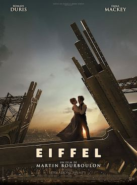

Martin Bourboulon
2021
115 minutes
This film reminds you of Cincinnati. In particular King's Island, an amusement park which features a one-third scale replica of the Eiffel tower. Your father lived about five miles from the park when his work moved him there when you were a kid, one of the many cities he bounced around to in your younger years, so you got to spend a good amount of time near this landmark whenever it was his turn to have you at his place. They had fireworks every night, which was cute at first but got annoying pretty quickly.
The last time you dashed off to spend the better part of a month in Paris, you told few of your friends where you were going since you didn't feel like explaining. You sent a couple of your Indiana/Ohio friends a selfie of yourself next to the actual Eiffel Tower with a text suggesting that you were at King's Island riding The Beast. To your surprise they actually believed you, and they were utterly baffled by further texts you sent them of pictures taken in Paris' red light district near where you were staying, which looks nothing like Cincinnati to say the least.
Upon arrival at the actual Eiffel Tower, a large bird shat on you. You considered this a sign of good luck. You were also delighted to find a stand selling barbe à papa (French for "cotton candy"), which was when it finally dawned on you where they got the name for Barbapapa, your favorite French cartoon when you were a kid which featured an amorphous pink blob and his other blob friends who could all transform into different shapes. All in all it was a great way to hit the ground running on your Paris trip.
Time to choose something different: